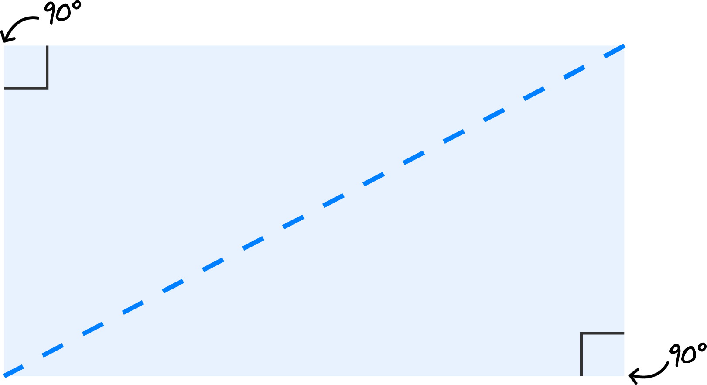
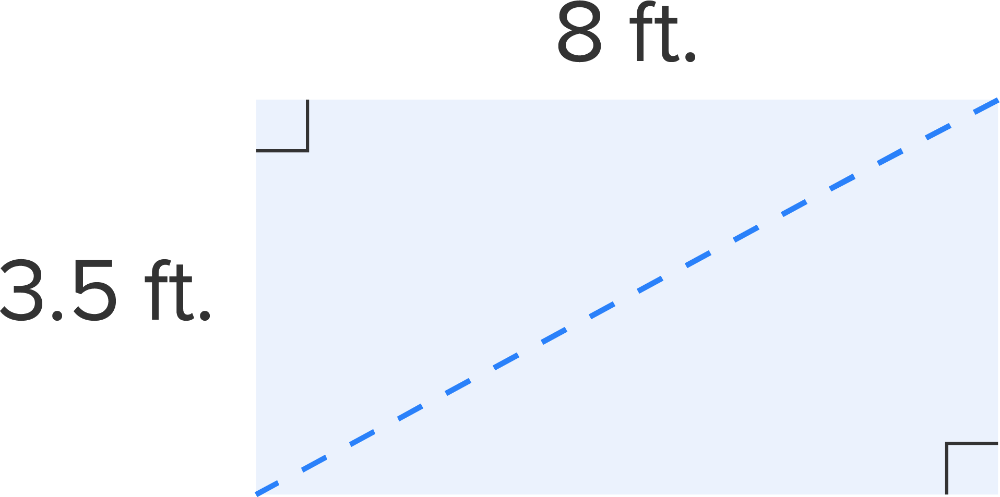

Table of Contents |
1. Calculating Diagonals
A diagonal connects two non-adjacent vertices in an enclosed shape. Below is an example of a diagonal of a rectangle:

Notice that the diagonal of the rectangle connects two opposite corners. It also creates two congruent triangles. Congruent means of equal measure, so the two triangles are the same size and take up the same amount of space. We should also point out that the triangles are right triangles because one of their angles is a 90-degree angle (taken from the 90-degree angles of the rectangle).
Let's take a closer look at the rectangle and the two triangles that the diagonal created. The sides of the rectangle correspond to the vertical and horizontal legs of the right triangle. What about the diagonal? We can refer to the diagonal as the hypotenuse of the right triangle. (The hypotenuse is always opposite of the right angle.)
2. The Pythagorean Theorem
To calculate the length of the diagonal, we can use Pythagorean Theorem to calculate the length of the hypotenuse. The Pythagorean Theorem uses the side lengths of the other legs of the right triangle in order to find the length of the hypotenuse:
-
- Pythagorean Theorem
If we take the sum of the squares of the side lengths, this equals the square of the hypotenuse leg. We'll just need to take the square root of the sum in order to express the length of the hypotenuse.
-
EXAMPLE
Suppose you have the following right triangle with side lengths of 3.5 feet and 8 feet.

We can substitute 3.5 feet and 8 feet into and b, respectively, and apply the Pythagorean Theorem:
Use the Pythagorean Theorem and substitute the measurements of the leg Square 3.5 ft and 8 ft and evaluate Add 12.25 ft2 and 64 ft2 Apply the square root of both sides Evaluate Our solution, rounded to the tenth place
Another method to solve is to rewrite the Pythagorean Theorem, isolating c on one side of the equation. Then, we can substitute and b into the equation, and calculate the length of the diagonal. This is shown in the example below:
-
EXAMPLE
Use the same right triangle above, with side lengths of 3.5 feet and 8 feet.
Start with the Pythagorean Theorem and take the square root of both sides Substitute the measurements of the leg Square 3.5 ft and 8 ft Add 12.25 ft2 and 64 ft2 Take the square root Our solution, rounded to the tenth place
The Pythagorean Theorem Is Named After Pythagoras
Pythagoras was an ancient Greek mathematician and philosopher, born around 570 BCE on the island of Samos, and is best known for his groundbreaking work in geometry, particularly the Pythagorean Theorem, which you learned about in this tutorial. Pythagoras' profound mathematical insights laid the foundation for Euclidean geometry and had a lasting impact on the development of mathematics. Beyond mathematics, his philosophical teachings and mystical beliefs also greatly influenced famous Greek philosophers, such as Plato and Aristotle, shaping their understanding of numbers, music, and the nature of reality. You can learn more about Plato and Aristotle in Sophia's 1-unit Ancient Greek Philosophers course.
3. Applications
We can apply the Pythagorean Theorem to find the diagonal length for squares and rectangles found in the real world.
-
Television manufacturers state the screen size of each TV based on the length of its diagonal. If you have a 32-inch television at home, your TV screen measures 32 inches across its diagonal. This same convention is used for screens on computer monitors and smartphones.
-
Rudy measures the height and width of the television screen in his dorm room. The screen is 19.6 inches high and 34.9 inches long.